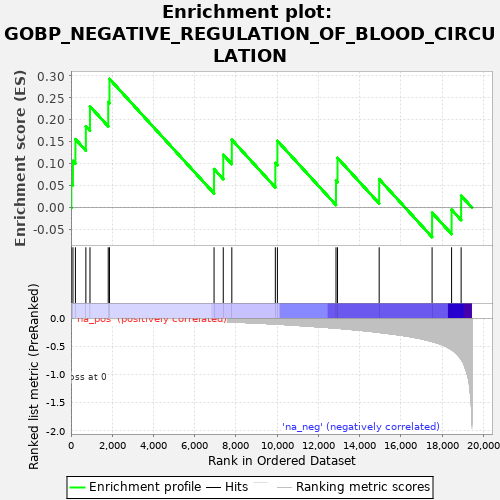
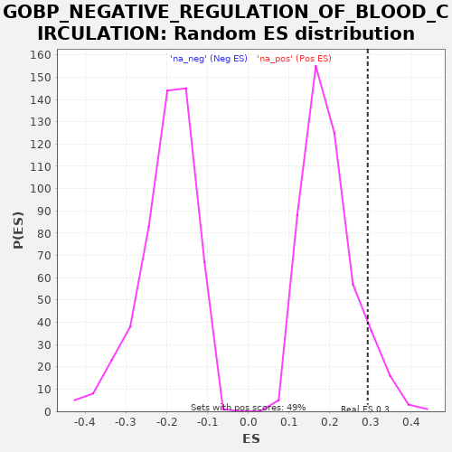

| | | Dataset | A_X_tradeoff |
| Phenotype | NoPhenotypeAvailable |
| Upregulated in class | na_pos |
| GeneSet | GOBP_NEGATIVE_REGULATION_OF_BLOOD_CIRCULATION |
| Enrichment Score (ES) | 0.2931338 |
| Normalized Enrichment Score (NES) | 1.4772093 |
| Nominal p-value | 0.08436214 |
| FDR q-value | 0.8029891 |
| FWER p-Value | 1.0 |
Table: GSEA Results Summary

Fig 1: Enrichment plot: GOBP_NEGATIVE_REGULATION_OF_BLOOD_CIRCULATION
Profile of the Running ES Score & Positions of GeneSet Members on the Rank Ordered List
| SYMBOL | RANK IN GENE LIST | RANK METRIC SCORE | RUNNING ES | CORE ENRICHMENT | | 1 | ATP1A2 | 17 | -0.000 | 0.0547 | Yes |
| 2 | FKBP1B | 94 | -0.001 | 0.1063 | Yes |
| 3 | PLN | 214 | -0.001 | 0.1558 | Yes |
| 4 | NPFF | 721 | -0.004 | 0.1853 | Yes |
| 5 | SPX | 921 | -0.005 | 0.2306 | Yes |
| 6 | AGER | 1806 | -0.010 | 0.2407 | Yes |
| 7 | ADORA1 | 1867 | -0.010 | 0.2931 | Yes |
| 8 | BIN1 | 6940 | -0.058 | 0.0877 | No |
| 9 | ZC3H12A | 7387 | -0.064 | 0.1203 | No |
| 10 | IL2 | 7802 | -0.070 | 0.1546 | No |
| 11 | PIK3CG | 9913 | -0.107 | 0.1016 | No |
| 12 | PDE4D | 10013 | -0.109 | 0.1520 | No |
| 13 | SPTBN4 | 12856 | -0.180 | 0.0614 | No |
| 14 | JAK2 | 12930 | -0.182 | 0.1132 | No |
| 15 | ATP1A1 | 14951 | -0.256 | 0.0648 | No |
| 16 | GRK2 | 17518 | -0.419 | -0.0117 | No |
| 17 | SRI | 18464 | -0.561 | -0.0048 | No |
| 18 | ATP2A2 | 18927 | -0.732 | 0.0270 | No |
Table: GSEA details [plain text format]

Fig 2: GOBP_NEGATIVE_REGULATION_OF_BLOOD_CIRCULATION: Random ES distribution
Gene set null distribution of ES for GOBP_NEGATIVE_REGULATION_OF_BLOOD_CIRCULATION